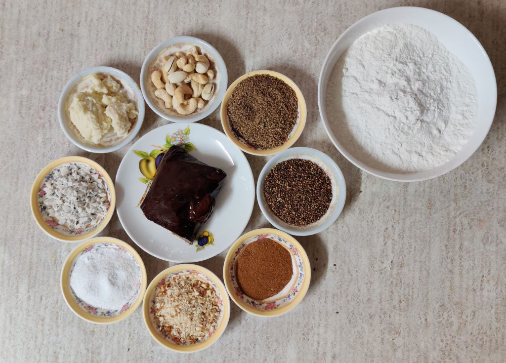
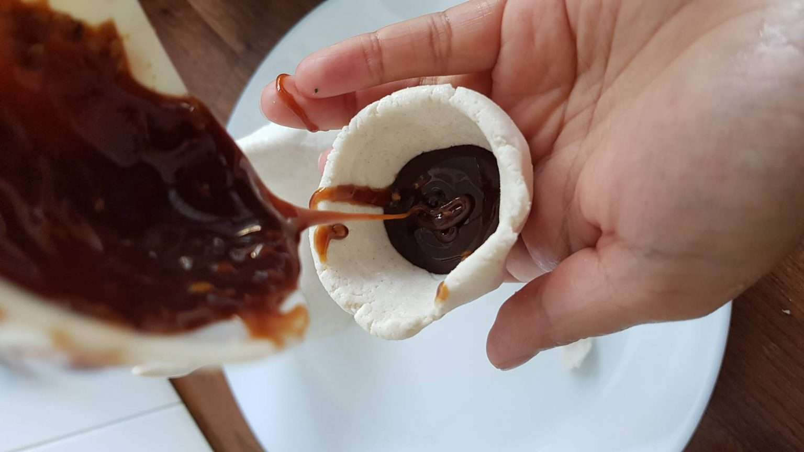

Yomari
Rice flour dumpling
Yomari is a Newari food eaten during the festival of Yomari Punhi in Nepal
Prep. Time
30 minutes
Cook Time
25 minutes
Total Time
55 minutes
Servings
10

Ingredients
- Rice Flour (2 cups)
- Chaku or Khuwa (1 cup)
- Grained coconut (1 tbs)
- Roasted Sesame (1 tbs)
- Ghee (2 tbsps)
- Water (as required)
Procedures
- First, prepare Smooth dough. Boil the water. with 2 tbsps ghee in the water. Add water slowly to rice flour. Gently stir the mixture until it is all sticky and thick. Then blend it into a smooth dough. Tips: Don’t make the dough too soft. Better to use Taichin rice
- Once the dough is ready, keep it aside for about 10-15min. Tips: Don’t forget to cover it with a damp cloth.
- Prepare for the filling that what exactly you wanna stuff inside the Yomari. Filling may be Chaku (molasses), Roasted Sesame Seeds, Grained Coconut, Khuwa, etc
- Shape the rice dough and design it into small pockets. Later, you have to add the filling and seal it. It is formed into different shapes which often represent fruits and marionettes of gods and goddesses. Tips: Before shaping put a little bit of oil in your hand so it won’t stick in your hand.
- After the sealing process, you have to steam it just like in the making of MO: MO for about 10-15min.
- And, here we are ready with our warm Yomari.

Nutritions
Serving: 1g | Calories: 108kcal | Carbohydrates: 14g | Protein: 1g | Fat: 5g | Saturated Fat: 3g | Cholesterol: 18mg | Sodium: 79mg | Potassium: 17mg | Sugar: 8g | Vitamin A: 165IU | Calcium: 6mg | Iron: 0.4mg